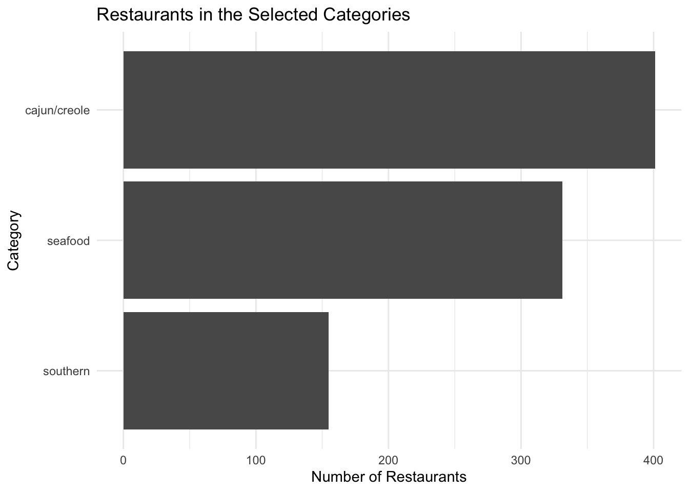
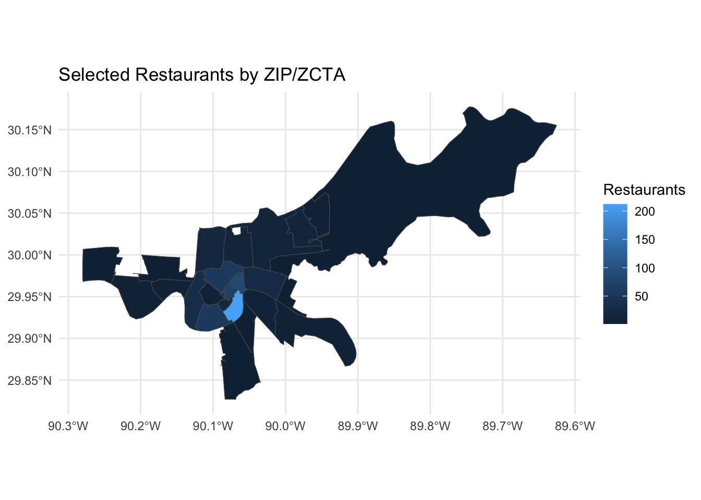
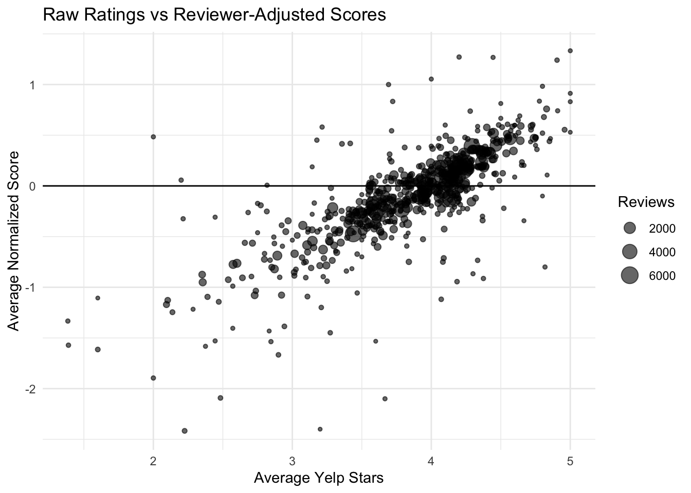
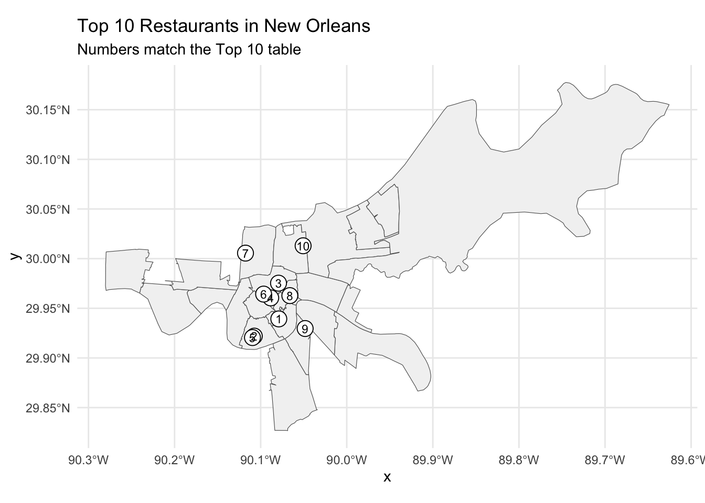

Show code
library(tidyverse)
library(sf)
library(tigris)
options(tigris_use_cache = TRUE)
restaurants <- readRDS(
"data/new_orleans/business.rds"
)
reviews <- readRDS(
"data/new_orleans/reviews.rds"
)Where can someone find the best seafood, Cajun/Creole, and Southern restaurants in New Orleans, and which ZIP/ZCTA areas are best for finding them?
For this project, I looked at Seafood, Cajun/Creole, and Southern restaurants in New Orleans.
I found 648 restaurants that belonged to at least one of these three categories. They were spread across 24 ZIP/ZCTA areas.
I compared ZIP/ZCTA areas with census tracts and decided to use ZIP/ZCTA for the main analysis. All 2,259 restaurants could be assigned to a ZIP/ZCTA, while 57 restaurants did not match a census tract.
For the reviewer-adjusted part of the project, I used reviewers with at least five reviews in the selected restaurant categories. This gave me 7,052 eligible reviewers, representing about 23.9% of the reviews in the selected categories.
For the final restaurant ranking, I used a stricter rule and required each restaurant to have at least 10 reviews from eligible reviewers.
library(tidyverse)
library(sf)
library(tigris)
options(tigris_use_cache = TRUE)
restaurants <- readRDS(
"data/new_orleans/business.rds"
)
reviews <- readRDS(
"data/new_orleans/reviews.rds"
)The original Yelp files were very large, especially the review file. Loading the full files every time would have taken a lot of memory and time.
To make the project easier to work with, I first kept only the columns I needed and filtered the business data to New Orleans restaurants.
For the review file, I read the data in smaller chunks of 10,000 rows. I only kept reviews that belonged to the New Orleans restaurants.
After that, I saved the smaller filtered datasets as RDS files. This meant I did not have to reload the original large JSON files every time I worked on the project.
The original Yelp JSON files are not uploaded to GitHub because they are very large.
This is the main import code I used in R/import.R.
library(tidyverse)
library(jsonlite)
business <- stream_in(
file(
"data/raw/yelp_academic_dataset_business.json"
),
verbose = FALSE
)
business <- business |>
select(
business_id,
name,
address,
city,
state,
postal_code,
latitude,
longitude,
stars,
review_count,
categories
)
new_orleans_business <- business |>
filter(city == "New Orleans") |>
filter(
str_detect(
categories,
"Restaurants"
)
)
saveRDS(
new_orleans_business,
"data/new_orleans/business.rds"
)
restaurant_ids <-
new_orleans_business$business_id
review_list <- list()
keep_reviews <- function(x) {
x <- x |>
filter(
business_id %in%
restaurant_ids
) |>
select(
business_id,
user_id,
stars,
date,
text,
useful,
funny,
cool
)
review_list <<-
append(
review_list,
list(x)
)
}
jsonlite::stream_in(
file(
"data/raw/yelp_academic_dataset_review.json"
),
handler = keep_reviews,
pagesize = 10000,
verbose = FALSE
)
new_orleans_reviews <-
bind_rows(review_list)
saveRDS(
new_orleans_reviews,
"data/new_orleans/reviews.rds"
)I chose Seafood, Cajun/Creole, and Southern.
I picked these because they fit together as a New Orleans food theme. I also wanted to make sure there were enough restaurants in the categories to make useful comparisons.
First, I separated the Yelp category field into individual categories.
restaurant_categories <- restaurants |>
select(
business_id,
name,
categories
) |>
separate_rows(
categories,
sep = ","
) |>
mutate(
category =
str_to_lower(
str_trim(categories)
)
)
selected_categories <- c(
"seafood",
"cajun/creole",
"southern"
)
category_counts <-
restaurant_categories |>
filter(
category %in%
selected_categories
) |>
count(
category,
sort = TRUE
)
knitr::kable(
category_counts,
col.names = c(
"Category",
"Number of Restaurants"
),
caption =
"Selected Restaurant Categories"
)| Category | Number of Restaurants |
|---|---|
| cajun/creole | 401 |
| seafood | 331 |
| southern | 155 |
The category counts were:
Restaurants can have more than one Yelp category, so I checked how often the categories appeared together.
category_pairs <-
restaurant_categories |>
filter(
category %in%
selected_categories
) |>
select(
business_id,
category
) |>
inner_join(
restaurant_categories |>
filter(
category %in%
selected_categories
) |>
select(
business_id,
category2 = category
),
by = "business_id",
relationship = "many-to-many"
) |>
filter(
category < category2
) |>
count(
category,
category2,
sort = TRUE
)
knitr::kable(
category_pairs,
col.names = c(
"Category 1",
"Category 2",
"Restaurants"
),
caption =
"Category Co-occurrence"
)| Category 1 | Category 2 | Restaurants |
|---|---|---|
| cajun/creole | seafood | 156 |
| cajun/creole | southern | 72 |
| seafood | southern | 45 |
The biggest overlap was between Cajun/Creole and Seafood, with 156 restaurants.
Cajun/Creole and Southern appeared together in 72 restaurants, while Seafood and Southern appeared together in 45 restaurants.
This gave me more evidence that the three categories made sense as one restaurant theme instead of being three unrelated categories.
My inclusion rule was simple: a restaurant was included if it belonged to at least one of the three categories.
selected_restaurants <-
restaurant_categories |>
filter(
category %in%
selected_categories
) |>
distinct(business_id) |>
inner_join(
restaurants,
by = "business_id"
)
selected_restaurant_count <-
nrow(selected_restaurants)
selected_restaurant_count[1] 648This resulted in 648 unique restaurants.
ggplot(
category_counts,
aes(
x = reorder(category, n),
y = n
)
) +
geom_col() +
coord_flip() +
labs(
title =
"Restaurants in the Selected Categories",
x = "Category",
y = "Number of Restaurants"
) +
theme_minimal()
The Yelp data has a city field, but I also wanted to compare the restaurant coordinates with an official Census geographic boundary.
restaurants_sf <- st_as_sf(
restaurants,
coords = c(
"longitude",
"latitude"
),
crs = 4326,
remove = FALSE
)
louisiana_places <-
tigris::places(
state = "LA",
cb = TRUE,
year = 2024,
class = "sf"
)
louisiana_places <-
st_transform(
louisiana_places,
4326
)
restaurants_with_place <-
st_join(
restaurants_sf,
louisiana_places |>
select(
GEOID,
place_name = NAME
),
join = st_within,
left = TRUE
)
place_check <-
restaurants_with_place |>
st_drop_geometry() |>
count(
city,
place_name,
sort = TRUE
)
head(place_check, 10) city place_name n
1 New Orleans New Orleans 2202
2 New Orleans Elmwood 18
3 New Orleans Jefferson 13
4 New Orleans Harahan 10
5 New Orleans Terrytown 4
6 New Orleans Metairie 3
7 New Orleans River Ridge 3
8 New Orleans Arabi 2
9 New Orleans Harvey 2
10 New Orleans Gretna 1I used this as a second check on the Yelp city labels. Small differences can happen because Yelp city labels and official geographic boundaries are not always defined in exactly the same way.
For the main geographic analysis, I compared ZIP Code Tabulation Areas (ZCTAs) with census tracts.
zips <- zctas(
cb = TRUE,
year = 2020
)
zips <- st_transform(
zips,
4326
)
restaurants_zip <- st_join(
restaurants_sf,
zips["ZCTA5CE20"]
)
zip_area_counts <-
restaurants_zip |>
st_drop_geometry() |>
filter(
!is.na(ZCTA5CE20)
) |>
count(ZCTA5CE20)tract_boundaries <-
tigris::tracts(
state = "LA",
county = "Orleans",
cb = TRUE,
year = 2020
)
tract_boundaries <-
st_transform(
tract_boundaries,
4326
)
restaurants_tract <- st_join(
restaurants_sf,
tract_boundaries["GEOID"]
)
tract_area_counts <-
restaurants_tract |>
st_drop_geometry() |>
filter(
!is.na(GEOID)
) |>
count(GEOID)I compared the number of areas, how many restaurants were assigned, how many did not match, and the smallest and largest restaurant counts.
geography_comparison <- tibble(
geography = c(
"ZIP/ZCTA",
"Census Tract"
),
areas_with_restaurants = c(
nrow(zip_area_counts),
nrow(tract_area_counts)
),
restaurants_assigned = c(
sum(
!is.na(
restaurants_zip$ZCTA5CE20
)
),
sum(
!is.na(
restaurants_tract$GEOID
)
)
),
unmatched_restaurants = c(
sum(
is.na(
restaurants_zip$ZCTA5CE20
)
),
sum(
is.na(
restaurants_tract$GEOID
)
)
),
smallest_area_count = c(
min(zip_area_counts$n),
min(tract_area_counts$n)
),
largest_area_count = c(
max(zip_area_counts$n),
max(tract_area_counts$n)
)
)
knitr::kable(
geography_comparison,
col.names = c(
"Geographic System",
"Areas With Restaurants",
"Restaurants Assigned",
"Unmatched Restaurants",
"Smallest Area Count",
"Largest Area Count"
),
caption =
"Detailed Geographic System Comparison"
)| Geographic System | Areas With Restaurants | Restaurants Assigned | Unmatched Restaurants | Smallest Area Count | Largest Area Count |
|---|---|---|---|---|---|
| ZIP/ZCTA | 29 | 2259 | 0 | 1 | 588 |
| Census Tract | 145 | 2202 | 57 | 1 | 425 |
I chose ZIP/ZCTA for the main analysis.
All 2,259 restaurants were assigned to a ZIP/ZCTA, while 57 restaurants were unmatched when I used census tracts.
Census tracts also divided the city into many more small areas. This can make restaurant comparisons less stable because some areas have only a small number of restaurants.
ZIP/ZCTA gave me complete restaurant coverage, fewer areas to compare, and geographic areas that were easier to explain.
I also know that ZCTAs are not the same thing as official neighborhoods, so I only describe them as ZIP/ZCTA areas in this project.
Next, I checked whether my selected restaurant group appeared in enough different ZIP/ZCTA areas.
selected_sf <- st_as_sf(
selected_restaurants,
coords = c(
"longitude",
"latitude"
),
crs = 4326,
remove = FALSE
)
selected_zip <- st_join(
selected_sf,
zips["ZCTA5CE20"]
)
selected_zip_check <-
selected_zip |>
st_drop_geometry() |>
summarise(
restaurants = n(),
zip_areas =
n_distinct(
ZCTA5CE20,
na.rm = TRUE
)
)
knitr::kable(
selected_zip_check,
col.names = c(
"Selected Restaurants",
"ZIP/ZCTA Areas"
),
caption =
"Selected Restaurant Geographic Coverage"
)| Selected Restaurants | ZIP/ZCTA Areas |
|---|---|
| 648 | 24 |
The selected category group had 648 restaurants spread across 24 ZIP/ZCTA areas.
This is more than enough for the requirement of at least 10 restaurants in at least seven geographic areas.
zip_counts <- selected_zip |>
st_drop_geometry() |>
count(
ZCTA5CE20,
name = "restaurants"
)
zip_map <- zips |>
inner_join(
zip_counts,
by = "ZCTA5CE20"
)
ggplot(zip_map) +
geom_sf(
aes(
fill = restaurants
)
) +
labs(
title =
"Selected Restaurants by ZIP/ZCTA",
fill = "Restaurants"
) +
theme_minimal()
This map shows that the selected restaurants are not spread evenly across New Orleans. Some ZIP/ZCTA areas have many more restaurants than others.
Next, I used the individual Yelp review data.
First, I kept only reviews belonging to the selected 648 restaurants.
category_reviews <- reviews |>
semi_join(
selected_restaurants,
by = "business_id"
)I calculated the average rating and number of reviews for each restaurant using all reviewers.
all_reviewer_summary <-
category_reviews |>
group_by(business_id) |>
summarise(
number_of_reviews = n(),
average_stars = mean(
stars,
na.rm = TRUE
),
median_stars = median(
stars,
na.rm = TRUE
),
.groups = "drop"
)A reviewer with only one review does not give much information about how that person usually rates restaurants.
Because of this, I decided to focus on reviewers with at least five reviews in my selected restaurant categories.
reviewer_activity <-
category_reviews |>
count(
user_id,
name = "review_count"
)
eligible_reviewers <-
reviewer_activity |>
filter(
review_count >= 5
)
selected_reviewer_reviews <-
category_reviews |>
semi_join(
eligible_reviewers,
by = "user_id"
)
eligible_reviewer_count <-
nrow(
eligible_reviewers
)
percent_reviews_kept <-
100 *
nrow(
selected_reviewer_reviews
) /
nrow(
category_reviews
)
reviewer_summary_table <- tibble(
eligible_reviewers =
eligible_reviewer_count,
percent_of_reviews =
percent_reviews_kept
)
knitr::kable(
reviewer_summary_table,
digits = 1,
col.names = c(
"Eligible Reviewers",
"Percent of Reviews"
),
caption =
"Reviewer Activity Summary"
)| Eligible Reviewers | Percent of Reviews |
|---|---|
| 7052 | 23.9 |
This gave me 7,052 eligible reviewers.
Their reviews represented about 23.9% of all reviews in the selected categories.
I did not want to choose five without checking other possibilities.
I compared minimum reviewer activity levels of 3, 5, and 10 reviews.
thresholds <- c(
3,
5,
10
)
threshold_summary <- map_dfr(
thresholds,
function(x) {
reviewers_at_threshold <-
reviewer_activity |>
filter(
review_count >= x
)
reviews_at_threshold <-
category_reviews |>
semi_join(
reviewers_at_threshold,
by = "user_id"
)
tibble(
minimum_reviews = x,
reviewers =
nrow(
reviewers_at_threshold
),
percent_of_reviews =
100 *
nrow(
reviews_at_threshold
) /
nrow(
category_reviews
)
)
}
)
knitr::kable(
threshold_summary,
digits = 1,
col.names = c(
"Minimum Reviews",
"Eligible Reviewers",
"Percent of Reviews"
),
caption =
"Effect of Different Reviewer Thresholds"
)| Minimum Reviews | Eligible Reviewers | Percent of Reviews |
|---|---|---|
| 3 | 21792 | 43.7 |
| 5 | 7052 | 23.9 |
| 10 | 1366 | 10.0 |
A lower threshold keeps more reviewers but gives less information about each reviewer’s normal rating habits.
A higher threshold gives more information about each reviewer but removes a much larger amount of review data.
I chose five reviews as a middle point. It gave each reviewer enough history to estimate their usual rating behavior while still leaving a large group of reviewers for the analysis.
Different Yelp users do not use the 1-to-5 star scale in exactly the same way.
Some reviewers give high ratings most of the time. Other reviewers are more strict.
To account for this, I calculated each reviewer’s average rating within the selected restaurant group.
reviewer_baselines <-
category_reviews |>
group_by(user_id) |>
summarise(
reviewer_mean =
mean(
stars,
na.rm = TRUE
),
reviewer_median =
median(
stars,
na.rm = TRUE
),
reviewer_review_count = n(),
.groups = "drop"
)For the main analysis, I used the mean reviewer rating as the baseline.
Then I subtracted that person’s usual average from every individual rating.
adjusted_reviews <-
category_reviews |>
left_join(
reviewer_baselines,
by = "user_id"
) |>
mutate(
normalized_score =
stars - reviewer_mean
) |>
semi_join(
eligible_reviewers,
by = "user_id"
)For example, imagine a reviewer normally gives restaurants an average of 3 stars.
If that reviewer gives one restaurant 4 stars, the normalized score is:
4 - 3 = +1
That means the reviewer liked that restaurant more than they usually like restaurants.
If someone normally gives 5 stars and gives a restaurant 4 stars, the normalized score would be negative.
The normalized score is not another Yelp star rating. It only shows whether a restaurant received a higher or lower rating than that reviewer’s normal behavior.
restaurant_summary <-
selected_restaurants |>
select(
business_id,
name,
address,
latitude,
longitude
) |>
left_join(
all_reviewer_summary,
by = "business_id"
) |>
left_join(
adjusted_reviews |>
group_by(business_id) |>
summarise(
eligible_reviews = n(),
average_stars_eligible =
mean(
stars,
na.rm = TRUE
),
average_normalized_score =
mean(
normalized_score,
na.rm = TRUE
),
median_normalized_score =
median(
normalized_score,
na.rm = TRUE
),
.groups = "drop"
),
by = "business_id"
)I compared the regular average Yelp rating with the reviewer-adjusted result.
plot_data <-
restaurant_summary |>
filter(
!is.na(
average_stars
),
!is.na(
average_normalized_score
)
)
ggplot(
plot_data,
aes(
x = average_stars,
y = average_normalized_score
)
) +
geom_hline(
yintercept = 0
) +
geom_point(
aes(
size = number_of_reviews
),
alpha = 0.6
) +
labs(
title =
"Raw Ratings vs Reviewer-Adjusted Scores",
x =
"Average Yelp Stars",
y =
"Average Normalized Score",
size = "Reviews"
) +
theme_minimal()
There is a positive relationship between regular Yelp ratings and reviewer-adjusted scores, but it is not perfect.
This means reviewer behavior can change how some restaurants compare with each other.
For the restaurant ranking, I used a stricter requirement than the reviewer eligibility rule.
To make the comparison more reliable, I only ranked restaurants that had at least 10 reviews from eligible reviewers.
ranked_restaurants <-
restaurant_summary |>
filter(
eligible_reviews >= 10,
!is.na(
average_normalized_score
)
) |>
mutate(
raw_rank =
min_rank(
desc(
average_stars
)
),
adjusted_rank =
min_rank(
desc(
average_normalized_score
)
),
rank_change =
raw_rank -
adjusted_rank
)I then looked for restaurants whose rankings changed the most.
ranking_changes <-
ranked_restaurants |>
arrange(
desc(
abs(
rank_change
)
)
) |>
slice_head(n = 10) |>
select(
name,
average_stars,
average_normalized_score,
raw_rank,
adjusted_rank,
rank_change
)
knitr::kable(
ranking_changes,
digits = 2,
col.names = c(
"Restaurant",
"Average Stars",
"Normalized Score",
"Raw Rank",
"Adjusted Rank",
"Rank Change"
),
caption =
"Restaurants With the Largest Ranking Changes"
)| Restaurant | Average Stars | Normalized Score | Raw Rank | Adjusted Rank | Rank Change |
|---|---|---|---|---|---|
| Two Sisters Kitchen | 3.42 | 0.42 | 399 | 33 | 366 |
| Hieux Boil Seafood House | 4.09 | -0.71 | 177 | 445 | -268 |
| Mr. Potato | 3.70 | 0.31 | 315 | 61 | 254 |
| Le Citron Bistro | 3.81 | 0.38 | 285 | 39 | 246 |
| Up & Adam Eatz | 4.20 | -0.26 | 106 | 349 | -243 |
| Gallier Restaurant & Oyster Bar | 4.29 | -0.16 | 71 | 301 | -230 |
| Smiley’s Grill | 3.71 | 0.24 | 308 | 79 | 229 |
| Today’s Cajun Seafood | 4.09 | -0.43 | 176 | 405 | -229 |
| Marjie’s Grill | 4.32 | -0.12 | 64 | 279 | -215 |
| The Flying Pig Cafe | 4.13 | -0.28 | 155 | 364 | -209 |
These changes show why the reviewer adjustment matters.
A restaurant may have a strong regular Yelp rating but move lower after accounting for the normal behavior of the people reviewing it.
The opposite can also happen if a restaurant receives unusually high ratings from reviewers who are normally more critical.
For the final list, I used restaurants with at least 10 eligible reviews.
I used this stricter requirement because restaurants with only a few adjusted reviews could have unstable scores.
I ranked the restaurants first by their average normalized score. If restaurants had similar results, the total number of reviews was used as the second sorting value.
top10 <-
ranked_restaurants |>
filter(
eligible_reviews >= 10
) |>
arrange(
desc(
average_normalized_score
),
desc(
number_of_reviews
)
) |>
slice_head(n = 10) |>
mutate(
rank = row_number()
)
top10_table <- top10 |>
select(
rank,
name,
address,
number_of_reviews,
average_stars,
eligible_reviews,
average_normalized_score
)
knitr::kable(
top10_table,
digits = 2,
col.names = c(
"Rank",
"Restaurant",
"Address",
"All Reviews",
"Average Stars",
"Eligible Reviews",
"Normalized Score"
),
caption =
"Top 10 Seafood, Cajun/Creole, and Southern Restaurants"
)| Rank | Restaurant | Address | All Reviews | Average Stars | Eligible Reviews | Normalized Score |
|---|---|---|---|---|---|---|
| 1 | Cafe Porche and snowbar | 1625 Baronne St | 176 | 4.83 | 11 | 0.76 |
| 2 | Bonafried | 31 | 4.55 | 18 | 0.61 | |
| 3 | Orchid Seafood | 1201 N Broad St | 33 | 4.48 | 16 | 0.60 |
| 4 | Avery’s On Tulane | 2510 Tulane Ave | 306 | 4.64 | 100 | 0.59 |
| 5 | Tito’s Ceviche & Pisco | 5015 Magazine St | 221 | 4.72 | 94 | 0.59 |
| 6 | Jaidyn’s Wing Stop/Food For The Soul | 3216 Tulane Ave, Ste A | 60 | 4.58 | 21 | 0.59 |
| 7 | Chap’s Chicken | 206 West Harrison Ave, Ste C | 55 | 4.51 | 17 | 0.58 |
| 8 | Meauxbar | 942 N Rampart St | 283 | 4.40 | 74 | 0.58 |
| 9 | Seersucker Restaurant & Catering | 938 Hancock St | 46 | 4.72 | 14 | 0.55 |
| 10 | Fiorella’s the Original | 5325 Franklin Ave | 133 | 4.44 | 68 | 0.53 |
Using at least 10 eligible reviews gave me a more reliable final ranking while still leaving enough restaurants to compare.
I also mapped the Top 10 restaurants.
The number on each point matches the restaurant’s rank in the Top 10 table.
top10_sf <- st_as_sf(
top10,
coords = c(
"longitude",
"latitude"
),
crs = 4326,
remove = FALSE
)
selected_zip_ids <-
selected_zip |>
st_drop_geometry() |>
pull(ZCTA5CE20) |>
unique()
selected_zip_map <-
zips |>
filter(
ZCTA5CE20 %in%
selected_zip_ids
)
ggplot() +
geom_sf(
data =
selected_zip_map,
fill = "grey95"
) +
geom_sf(
data = top10_sf,
shape = 21,
fill = "white",
size = 5
) +
geom_sf_text(
data = top10_sf,
aes(
label = rank
),
size = 3
) +
labs(
title =
"Top 10 Restaurants in New Orleans",
subtitle =
"Numbers match the Top 10 table"
) +
theme_minimal()
The map makes it easier to see that many of the highest-ranked restaurants are located around the more central part of New Orleans instead of being spread evenly across every ZIP/ZCTA area.
Based on this analysis, the strongest Seafood, Cajun/Creole, and Southern restaurants were mostly concentrated in the more central ZIP/ZCTA areas of New Orleans.
The Top 10 table gives the individual restaurants that performed best after adjusting for reviewer behavior and requiring at least 10 eligible reviews for each restaurant.
ZIP/ZCTA was the geographic system I found most useful because it assigned all of the restaurants to an area and gave larger, easier-to-understand groups than census tracts.
The reviewer adjustment also changed some restaurant rankings, showing that regular Yelp stars do not tell the entire story. Reviewers have different rating habits, and adjusting for those habits gives another way to compare restaurants.
For this project, I studied Seafood, Cajun/Creole, and Southern restaurants in New Orleans.
The three categories worked well together because they had a lot of restaurants and also had clear overlap in the Yelp category data.
There were 648 selected restaurants across 24 ZIP/ZCTA areas.
I compared ZIP/ZCTA areas with census tracts and chose ZIP/ZCTA because all 2,259 restaurants were assigned successfully, while 57 restaurants were unmatched using census tracts.
For the reviewer analysis, I tested several activity thresholds and decided that a reviewer needed at least five reviews to be considered an eligible reviewer. This gave me 7,052 active reviewers.
For the final restaurant ranking, I used a stricter requirement of at least 10 eligible reviews per restaurant. This helped reduce the chance that a restaurant would rank highly because of only a few adjusted reviews.
I then adjusted each rating based on the reviewer’s normal scoring behavior.
Overall, the project showed that restaurant location, review volume, regular Yelp stars, and reviewer behavior all affect how the “best” restaurants can be defined.
There are a few limitations to this project.
First, Yelp reviews only represent people who decided to write a review. They may not represent every customer.
Second, the reviewer-adjusted analysis only uses reviewers with at least five reviews in the selected categories. This means many reviews are not included in the adjusted score.
Third, even with the final requirement of at least 10 eligible reviews per restaurant, some restaurants still have much more reviewer information than others. This means the adjusted score may still be more stable for restaurants with a large number of reviews.
The categories also come from Yelp’s category labels. A restaurant can belong to more than one category at the same time.
Finally, ZIP/ZCTA areas are useful for comparing restaurant locations, but they should not be treated as official New Orleans neighborhoods.
I used ChatGPT mainly when I got stuck or needed help understanding part of the R analysis.
One example happened during the geographic analysis. When I first tried to join restaurant points to ZIP boundaries, R gave me an error because the two objects used different coordinate systems.
I asked ChatGPT what the error meant. After that, I used st_transform() so the ZIP polygons and restaurant points both used EPSG 4326.
At first, I was only planning to use ZIP areas. After I looked at the project instructions again, I asked how I could compare two geographic systems instead of just using one. I then added census tracts and compared them with ZIP/ZCTA areas.
I also had a problem when my Quarto output showed regular tibble results instead of clean tables. I asked how to make the tables easier to read. I then changed the final tables to use knitr::kable().
For the reviewer analysis, I did not understand normalization at first. I asked what it meant to adjust ratings based on someone’s normal rating behavior. After I understood the idea, I calculated each reviewer’s average rating and subtracted it from their individual restaurant ratings.
I also asked follow-up questions instead of using the first answer every time. For example, after initially using five reviews as the reviewer cutoff, I compared thresholds of 3, 5, and 10 reviews so I could explain why five was a reasonable reviewer threshold.
Later, I also checked whether restaurants with only five adjusted reviews could make the final Top 10 unstable. I compared the ranking with a stricter requirement and changed the final restaurant ranking to require at least 10 eligible reviews.
When I got an object not found error in RStudio, I learned that I had tried to run a line before running the code that created that object. I fixed it by running the earlier code first.
I ran each part of the project in RStudio and checked the results before continuing.
The main data sources for this project were:
tigris R packageThe large original Yelp JSON files are not included in the GitHub repository because of their file sizes.